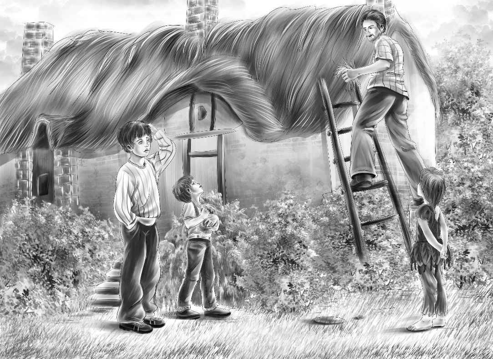

Peter
山洞这头，迈克正在说：“班尼，你再上来玩一会儿吧，我现在就下去。”
当然，班尼不可能回应，因为他根本不在那儿。
“天哪！”杰西惊呼道，“班尼去哪儿了？”
大家开始大声呼唤：“班尼！班尼！”然后仔细倾听着。
“那边好像有动静，”维莉指着远方说，“像是班尼的声音！他可能遇到麻烦了！”
于是，几个孩子飞快地翻下岩石，穿过树丛，边跑边不停地呼唤着班尼的名字。正跑着，奇怪的一幕突然闯入了他们的眼帘，只见班尼正和一个陌生人坐在陷阱口。
“班尼，你没受伤吧？”杰西大声问。
“我一点事儿都没有，”班尼说，“这位是彼得！我掉到了他的陷阱里，是他把我救了上来。”
亨利跑了过来，和两个男孩并排坐在一起。他问彼得：“你一个人住在岛上吗？”
“是的，”彼得说，“我独自在这儿已经住了三个星期啦。”
“三个星期？”亨利惊讶地问，“你是怎么知道时间的？”
“在树上刻记号啊！以前安德生先生跟我在一起的时候，他刻了六个月的记号。他走了以后，我就只能自己刻了，每过一天就刻一个记号。”
“安德生先生是谁？”杰西问。
“他是个水手。”彼得说，“我们的船撞上珊瑚礁，沉入了海底，我和安德生先生便坐着救生艇来到了这座小岛。我们在一起相依为命了六个月，直到有一天安德生先生去游泳，就再也没有回来。”
“这么说，你在岛上已经待了将近七个月了？”杰西问。
“没错。”彼得答道。
“可你一个人是怎么生活的呢？”杰西又问。
“我过得很好啊！”彼得说，“该怎么做，安德生先生都教给我了。”
“彼得，快跟我们说说，”迈克说，“你是怎么发现那个山洞的？”
“这件事说起来有趣，”彼得说，“我曾在书上看到过四个孩子生活在棚车里的故事，受到了启发。有一天雨下得很大，我在岛上找地方避雨，就发现了那些有檐的大石头。你们到小岛之前，我常坐在山洞里看雨呢！”
亨利悄声对班尼说：“先不要告诉他，我们就是棚车少年，以后再对他讲吧。”
迈克看着彼得，突然发问道：“那天的饼干是你拿的吗？”
彼得顿时不安起来。“对不起，”他说，“我在岛上呆了太久了。这儿的东西都不用花钱，任凭我拿，像香蕉、鱼、椰子、牡蛎、螃蟹、甘蔗什么的，都是如此。所以看到饼干也就习惯性地拿走了。”
“没关系，没关系！”迈克说，“谢天谢地，现在再不会有人怀疑是我偷吃了饼干！”
亨利问道：“彼得，你为什么之前不肯出来见我们呢？是害怕我们吗？”
“是的。”彼得说，“安德生先生说过，要是在岛上看到什么人，一定要躲起来，不能让人知道我在这儿。”
“安德生先生要你提防的应该是危险的人吧，比如食人族什么的，”亨利说，“不过这附近已经没有食人族了。”
“我不清楚，”彼得说，“你们也有可能是危险的人啊！后来我观察了你们很久，现在可以确定了，你们都是好人。”
“幸好我们找到了你！”亨利说。
“虽然我们知道你能照顾好自己，”杰西说，“但你不妨搬过来和我们一起住，和我们一起分享食物。对了，我们快要离开小岛了，你想和我们一起走吗？”
“那当然，”彼得说，“我想爸爸妈妈了。我以前住在波士顿附近。”
“那我们送你回波士顿，”班尼说，“只要咱们的船一来，我们就会帮你找到爸爸妈妈的。”
“嘿，小家伙，”亨利说，“别夸海口！我们只能尽力而为。彼得，如果说有谁能找到你父母的话，那这个人非我们的爷爷莫属。”
迈克冷不丁问道：“彼得，你怎么这么黑啊？”
“太阳晒的呗！要知道我已经在这儿生活好久了！”
“走吧，彼得，”亨利说，“我们带你去见纳思和爷爷。”
彼得并没有问谁是纳思，谁是爷爷，因为他对他们已经很了解了。他说：“你们到岛上的第一天，我就看到你们了。那天我看到大轮船，简直吓坏了！你们找到海龟壳的时候，我也看到了。你们说的每一句话我都听见了。后来我还看到你们找到了我的船，当时我特别怕你们把船拿走。”
“没错，我们听到你的哭声了，”班尼说，“我还纳闷是谁遇到麻烦了，没想到是你。”
大家开始往茅屋走去。杰西边走边说：“彼得，你居然还记得怎么说话？”
“我每天都会跟自己说话，”彼得说，“还会跟我的小鸟说话。”
“他会说什么话？”迈克问。
“是她，”彼得纠正道，“我的小鸟是个小姑娘。她会说‘早上好’、‘晚安’和‘你好啊，彼得’，还会说‘谢谢’、‘是’、‘不是’、‘生日快乐’和‘小心，很热！’”
“真是只伶俐的小鸟！”亨利说，“她一定经常陪着你。”
“没错，所以我很爱老米拉——米拉是我给她取的名字，安德生先生说她是只八哥鸟。”
“彼得，现在有我们陪你了，不是更好？”维莉问。
“那当然，”彼得说，“所以我才把班尼从陷阱里救出来啊，我觉得这是和你们认识的好机会，而且又没有大人在场。”
杰西说：“真好！爷爷和纳思肯定会惊讶万分的！”
不过他们并不知道，此时纳思刚刚飞奔回茅屋。孩子们到家时，纳思正装作若无其事的样子，坐在茅屋顶上，继续修那个破洞。
“纳思！”班尼喊道，“快来看我们发现了什么！我们的谜团解开了！”
纳思在屋顶上看到了彼得。“哈，原来是个小男孩！”纳思说，“你们是在哪儿找到他的？奥登先生，快来看我们的小客人！”
奥登先生走到门口，向外望去。
“爷爷，这是彼得！”亨利介绍道，“他在小岛上已经生活了六个多月了！”
奥登先生睡意阑珊，听了这话，他以为自己仍在梦中：“生活了六个多月？怎么可能？”
“他和我们一样，过得很开心呐！”班尼说，“美中不足的是没有饼干、牛奶和肉吃。”
纳思说：“来，彼得，快坐下跟我们讲讲你的经历。你是坐沙滩上的那艘救生艇来的吗？”
“是的，先生，”彼得回答道，“六个多月以前，安德生先生和我坐着那条船来到了岛上。”

纳思和奥登先生对视了一眼。
接着，奥登先生也走了过来，坐在彼得的旁边，“彼得，我想多了解一些那次沉船事件，我只知道它是因海难失事的。你愿意讲给我听听吗？如果回忆让你太伤心，就算了。”
“哦，没关系的，”彼得说，“我很乐意讲给你们听，也许说出来就不会太难过了。那天深夜，我们遇到了一场罕见的大暴风雨，轮船颠簸着，撞上了珊瑚礁，最后开始下沉。船员们在船的一边放下了三条救生艇，我和爸爸妈妈以及安德生先生坐上了其中一条，后来又上来了几个人，救生艇就翻了，大家一起掉到了水里，我什么都看不见了。”
“你父母得救了吗？”爷爷轻声问。
“我不知道，”彼得说，“也许吧！当时周围一片漆黑，我不停地下沉，下沉……突然，我模糊地意识到，安德生先生又把我拉回了救生艇。等我醒来的时候，就已经在这座小岛上了。从那以后，我们再也没见过其他的船。”
“这么说，你的父母可能以为你失踪了。”爷爷说。
“我也是这么觉得的——假如他们还活着的话。”
纳思说：“报纸上说，有一些幸存者被救了起来，并被送到了旧金山。”
“是真的吗？”彼得赶紧看向纳思，“说不定我的爸爸妈妈也得救了，可是他们肯定不知道我在哪儿。我和安德生先生一直没见到经过小岛的轮船。”
“沉船的地方离这儿一定很远。”爷爷说。
“是很远，因为安德生先生说他划了整整一天一夜才来到这儿，我想没人能游得过来。对了，你们能帮我剪剪头发吗？”
“亨利是理发高手呢！”迈克说。
维莉从工具袋里拿出她的剪刀，递给亨利。
亨利边剪边说：“彼得，这些剪下来的长头发你还是保留着吧！总有一天，你会想再看到它们的。”然后，他给彼得剪了个和迈克一样的发型。
“现在看起来帅多啦！”亨利说。
“彼得，你实在是好样儿的，能独自在岛上生活那么长时间，”纳思说，“我想你是个勇敢的孩子。”
“不勇敢不行啊！”彼得说，“真不好意思，我穿着这样的衣服，是不是很难看？”
大家这才注意到了彼得的衣服——他确实打扮得很古怪，所谓的衣服其实是大叶子做成的，叶子用棕色的绳子系在一起，很多根绳头在身上晃悠着。
“我原来的衣服因为洗掉了一颗纽扣，就再也不能穿了，”彼得说，“后来，我只好用椰子壳上的线编了些绳子，把叶子系在一起当衣服穿。”
听到这里，迈克立刻站起身，跑向自己的储物盒。随即又跑了回来，向彼得摊开手掌。
彼得看了一眼，不禁大声惊呼道，“是我的扣子！它是在海滩旁边的一个小水洼里被弄丢的。”他指着扣子说，“我后来怎么找都没找到。”
“你怎么可能找到呢？是我们钓上来的鱼吃掉了它，”迈克说，“而我们又把鱼吃掉了。”
“扣子能还给我吗？”彼得问，“我想留着它做个纪念。”
爷爷站了起来，“当然可以，彼得，好好保留着它吧！亨利，你去找几件衣服给彼得穿上，打扮齐整了，他的心情也会变好的。”
亨利和彼得立刻走进小茅屋。片刻之后，等他们出来时，彼得已经完全变了模样。
亨利问纳思：“你估计‘海星号’什么时候会返航？”
“天啊！”纳思感叹道，“这么多天以来，终于有人提到‘海星号’了！它随时都可能返航的。”
杰西说：“其实我们一点都不想离开蓝色海湾，但是现在不同了，我们想尽快帮彼得找到他的爸爸妈妈。”
“我几乎都忘记他们的样子了，”彼得说，“不过我肯定能认出他们来。”
爷爷轻声问：“彼得，你姓什么？”
“豪恩。”彼得回答道。
“豪恩？”迈克和班尼同时惊诧地叫了起来。
班尼解释道，“我们的老师就姓豪恩 [1] 。我就说了嘛，她的名字总会让我联想到牛。”
“牛？”杰西问，“为什么会联想到牛？”
“牛角是牛的一部分嘛！”班尼说。
“哈，原来如此，”杰西被逗得哈哈大笑，“你真调皮！”
“彼得·豪恩。”奥登先生慢慢地重复了一遍彼得的名字，似乎想起了什么。
“我爸爸的名字也叫彼得·豪恩。”彼得说。
“这个信息非常重要，孩子。”奥登先生说，“我们会努力寻找他们的，不过你要有心理准备，你的父母也有可能在沉船事故中遇难了，明白吗？”
“明白，”彼得说，“我刚刚还在想，假如回到家，他们不在了，我该怎么办？”
“别担心，彼得，”亨利说，“你可以搬来和我们一起住，做我们家的一员。”
亨利刚说完，所有人都微笑着点头，包括奥登先生。彼得简直不敢相信眼前的一切！
[1] 豪恩的英文是horn，牛角的意思。